G2026 台面 bring-up · 26 根杜邦线 · 配模块实物照片 + 核心板实物图 · 2026-10-02
CS WR RST D01 D03 … IQR GND（奇数脚 1,3,5…29），下排是 RS RD D00 D02 … BL 3V3（偶数脚 2,4…30）。CS → 核心板 D07。26 根里 21 根在 P1、5 根在 P2。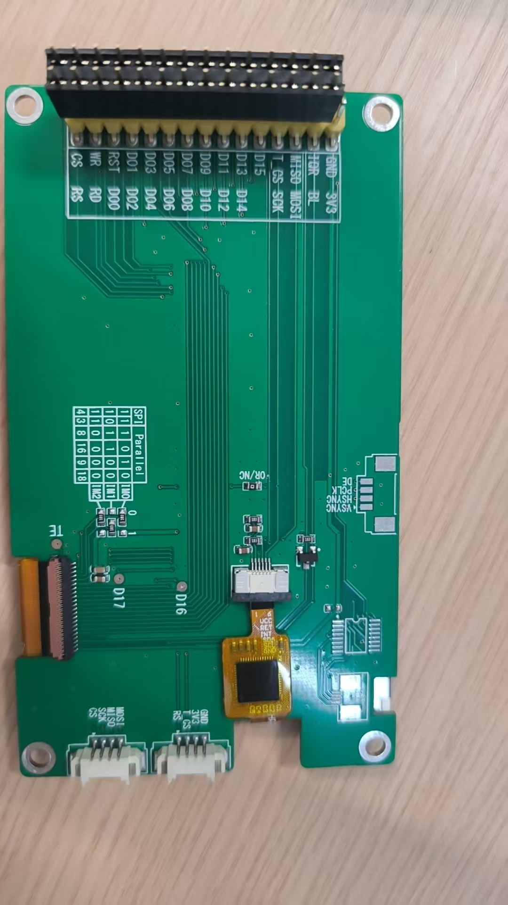
这块是屏 + 30-pin 转接板。上方黑色的是 2×15 排针（30 脚）；左缘橙色排线是屏的 45 脚 FPC；中左那张小表是 Parallel / SPI 位宽选择表；右下角的方块 IC 是触摸控制器。
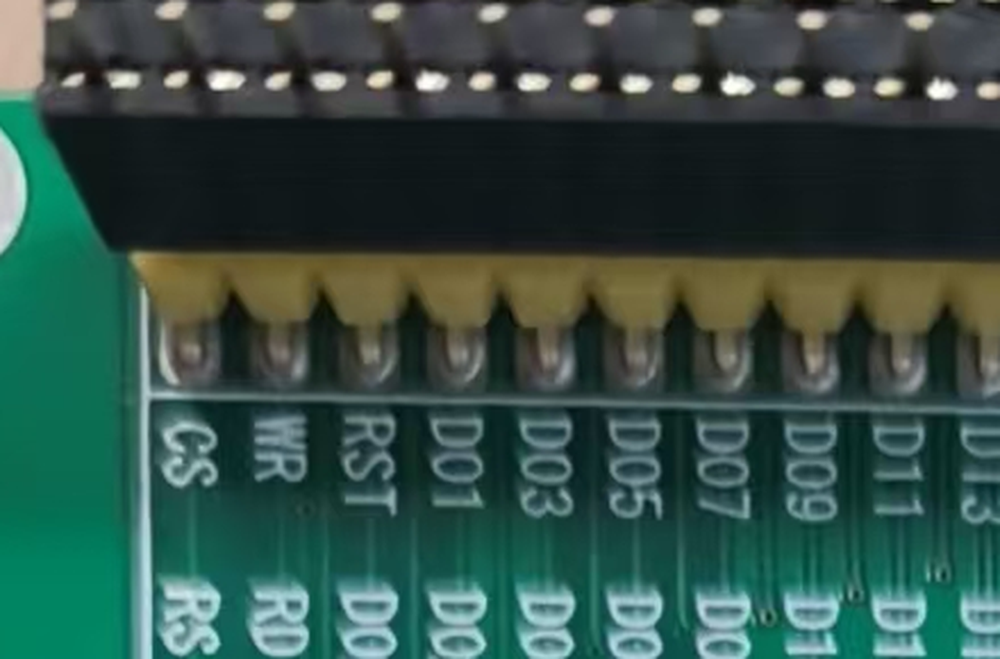
CS WR RST D01 D03 D05 D07 D09 D11 D13，下排 RS RD D00 D02 D04 D06 D08 D10 D12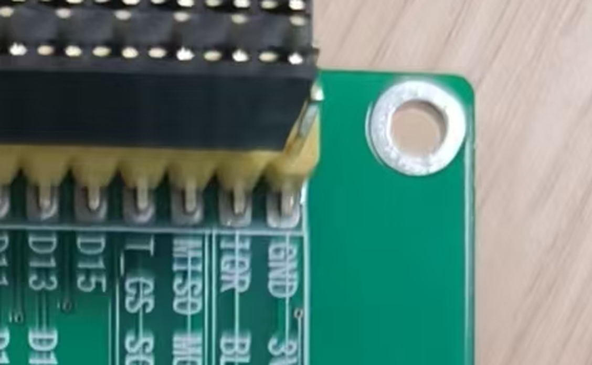
… D15 T_CS MISO IQR GND，下排 … D14 SCK MOSI BL 3V3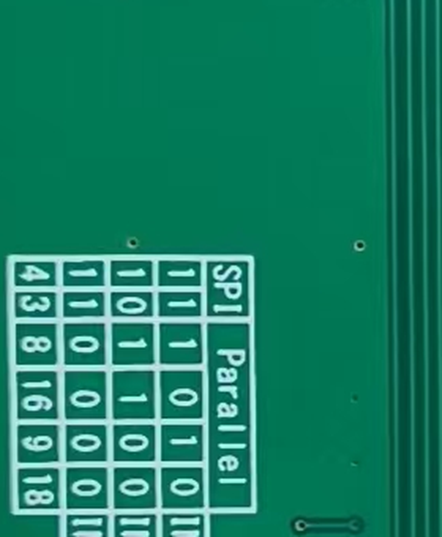
16 那一行 → 0 1 0 = 8080-16bit，正是本项目要的档位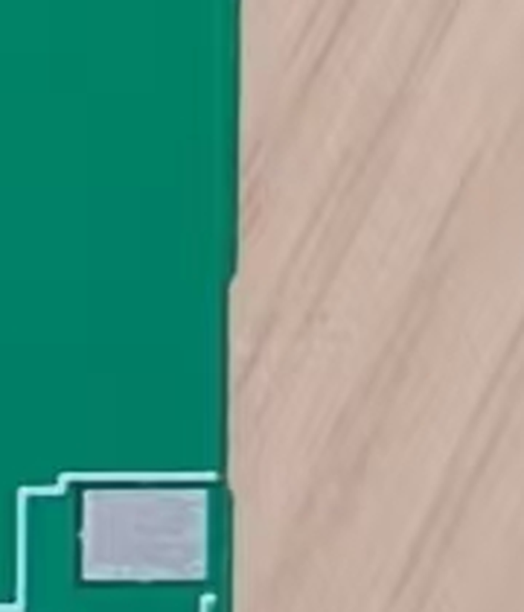
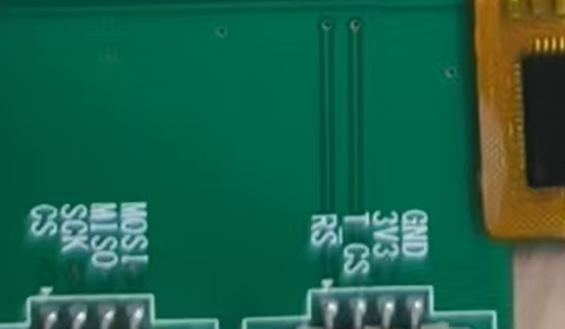
按你照片的丝印逐列列全。同一个「列」里的两个孔在板上是上下相邻的一对。
| 列 | 丝印上排（奇数脚） | 接核心板 | 排针脚号 | 丝印下排（偶数脚） | 接核心板 | 排针脚号 |
|---|---|---|---|---|---|---|
| 1 | CS | D07 | P2-27 | RS | D11 | P1-31 |
| 2 | WR | D05 | P2-29 | RD | D04 | P2-30 |
| 3 | RST | B01 | P1-14 | D00 | D14 | P1-36 |
| 4 | D01 | D15 | P1-35 | D02 | D00 | P2-32 |
| 5 | D03 | D01 | P2-31 | D04 | E07 | P1-13 |
| 6 | D05 | E08 | P1-16 | D06 | E09 | P1-15 |
| 7 | D07 | E10 | P1-18 | D08 | E11 | P1-17 |
| 8 | D09 | E12 | P1-20 | D10 | E13 | P1-19 |
| 9 | D11 | E14 | P1-22 | D12 | E15 | P1-21 |
| 10 | D13 | D08 | P1-30 | D14 | D09 | P1-29 |
| 11 | D15 | D10 | P1-32 | （空位） | 不接 | — |
| 12 | T_CS | 不接 | — | SCK | B10 | P1-23 |
| 13 | MISO | 不接 | — | MOSI | B11 | P1-24 |
| 14 | IQR | 暂不接 | — | BL | B00 | P1-11 |
| 15 | GND | GND | P1-39 | 3V3 | 3V3 | P1-38 |
合计 26 根：数据 16 + 并口控制 5（CS/RS/WR/RD/RST）+ 触摸 2（SCK/MOSI）+ 背光 1（BL）+ 电源 2（GND/3V3）。
不接 4 个：T_CS、MISO（8080 并口用不到）、第 11 列下排的空位（适配板 T_BUSY）、IQR（固件是只读轮询，不用触摸中断；且 PC5 在 .ioc 里还是 Output，接上会与触摸 IC 对打）。
⚠️ 2026-10-04 更正（本表已改）：本表原来把下排（偶数脚）整体写高了一列——
写成第 3 列下排是「空位」、第 4 列下排是 D00。正确读法是
上排 = 奇数脚、下排 = 偶数脚，两列都自 CS/RS 端起算 ⇒
D00 挨着 RST、空位（T_BUSY）挨着 D15。
依据：转接板原理图 PDF 文本层（pin1=CS、pin2=RS、pin3=WR、pin4=RD、pin5=RST、pin6=D00、pin7=D01、pin8=D02…pin21=D15、pin22=T_BUSY、pin23=T_CS、pin24=T_CLK、pin25=T_MISO、pin26=T_MOSI、pin27=T_IQR、pin28=BL_CTR、pin29=GND、pin30=3V3）
+ 实物照片 + 装配图焊盘标号（01 落在 CS 端）。原理图 J5 已同步改正（04 §6.18）。
丝印在背面。把板子丝印面朝上（下面这张图的样子）—— P1 在右、P2 在左。圈外字母 = 模块上对应的脚名。
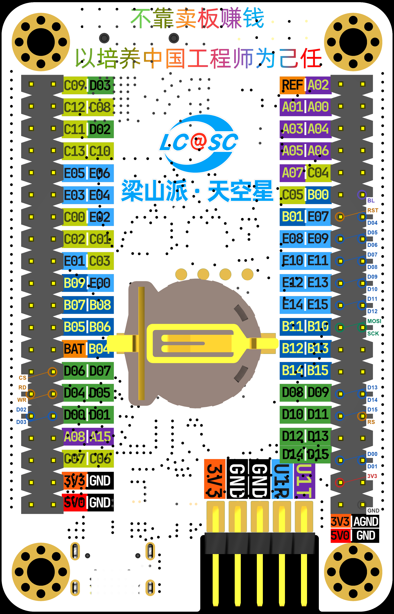
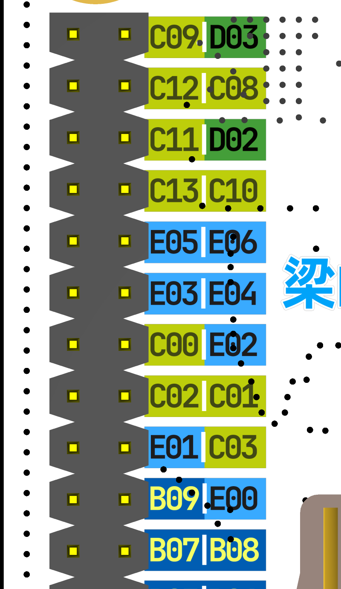
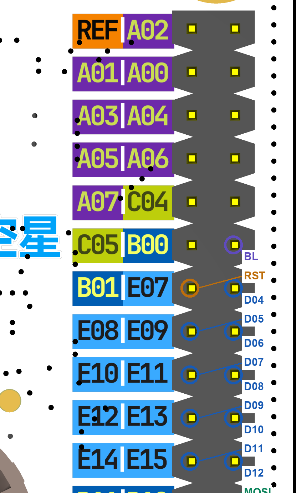
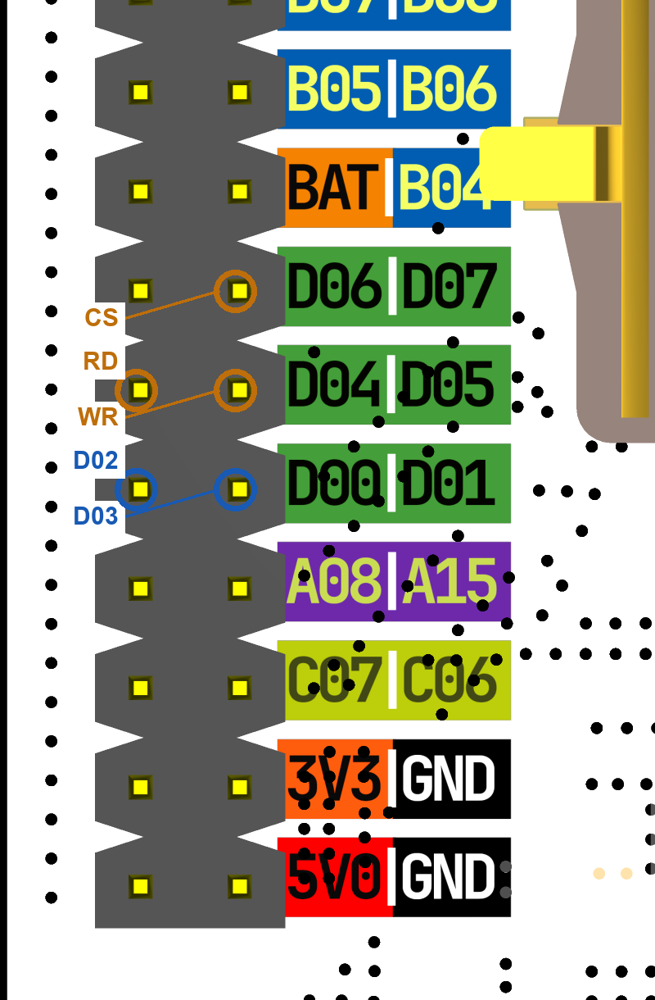
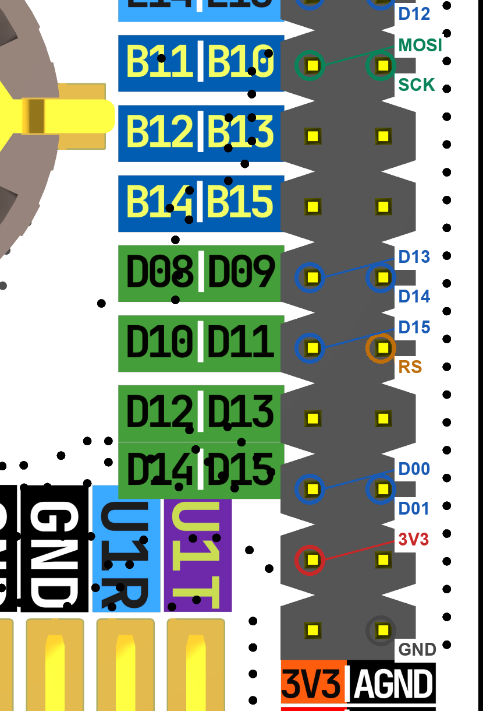
已确定：每列两个孔 = 一对信号（CS/RS、WR/RD、RST/D00…），丝印上排 = 奇数脚、下排 = 偶数脚，两列都自 CS/RS 端起算。这是从转接板原理图（pin1=CS、pin2=RS、pin3=WR、pin4=RD、pin5=RST、pin6=D00、pin7=D01、pin8=D02…pin21=D15、pin22=T_BUSY(空位)、pin29=GND、pin30=3V3）与你的照片双向对出来的。
⚠️ 2026-10-04 更正：这里原来写的是「D01/D00 一对、pin6=空、pin8=D00」，那是把下排读高了一列；正确是 RST 挨着 D00、D15 挨着空位。
还剩一个我没法从资料里读出来的点：丝印上排那一行名字，贴着的是靠外（离丝印远）还是靠里（离丝印近）的那个孔。转接板只给了 Altium 二进制工程 + 一张镜像机构图，这一层对应读不出来。
每个丝印名都紧挨着它自己那一排孔印 —— 所以：丝印上排（CS/WR/RST/D01…）= 靠外那一排孔；丝印下排（RS/RD/D00/D02…）= 靠里那一排孔。（靠外 = 离丝印远、靠板边的那排。）
GND → 模块最右列的上排孔（丝印 GND 那个）。3V3 先不接。3V3 → 同列的下排孔（丝印 3V3 那个）。为什么这样试是安全的：3V3 与 GND 只在这一列相邻。若接反，模块内部 3V3 与 GND 之间只有去耦电容，直流不成回路，不会短路；模块只是处于反压状态 —— 所以一看不亮就立刻断电，别停在那儿。想更保险就在 3V3 那根里串一个 1kΩ（电流钳到 3mA，背光会很暗，要关灯看）。
P1-39 + P2-37）到模块同一 GND 脚，降低回流阻抗。0x38 = SCL/SDA 落点全对。扫不到先查 §7-②。四段，从「不烧任何东西」到「看画面」。每项都给了判据 —— 按顺序做，别跳。
① 电源方向 —— 最高风险，先验这一项（通断/蜂鸣档）
| 表笔 | 应 | 含义 |
|---|---|---|
模块 3V3 孔 ↔ 核心板 3V3 孔（P1-38） | 响 | ✓ 3V3 接对了 |
模块 3V3 孔 ↔ 核心板 GND 孔（P1-39） | 必须不响 | 响 = 接反了，立刻改 |
模块 GND 孔 ↔ 核心板 GND 孔 | 响 | ✓ 共地正常 |
② 上电前测有没有短路（电阻档 20k/200k）—— 黑笔核心板 GND、红笔核心板 3V3：
③ 26 根逐根回对（一支笔固定模块的脚，另一支点核心板对应孔 → 应响；点相邻的孔 → 应不响）。按出错代价从高到低：
GND→P1-39、3V3→P1-38CS→D07、RS→D11、WR→D05、RD→D04、RST→B01SCK→B10、MOSI→B11、BL→B00D00→D14 D01→D15 D02→D00 D03→D01 D04→E07 D05→E08 D06→E09 D07→E10 D08→E11 D09→E12 D10→E13 D11→E14 D12→E15 D13→D08 D14→D09 D15→D10④ 相邻信号不能短路 —— 测模块上相邻两脚（如 D00 ↔ D01）→ 必须不响。杜邦线插歪最容易在这里出事。
⚠️ 2026-10-02 实测补充：烧了当前这版固件后，bsp_lcd_init() 开头就会把背光关掉
（等 LVGL 初始化完再开）—— 而该版固件在 LCD 硬复位处卡死（根因见 memory 日志：
调度器启动前调 xSemaphoreCreateBinary() 把 BASEPRI 钉住，HAL 时基被屏蔽）。
所以在修掉那个 bug 之前，「上电背光不亮」不能用来判断电源接反 —— 电源方向请一律用阶段 0-① 的通断档确认。
固件开机自动跑 app_self_test()（Task/Src/app.c），其中⑧ LCD 和 ⑨ 触摸两项正是给这块屏准备的：
cd firmware python Tools/fw.py verify # 门禁 → 烧录 → 抓 RTT → 判标记（一条命令到底） # 或分开：python Tools/fw.py flash 然后 python Tools/fw.py rtt
要盯的两行（2026-10-02 实测通过的真实值）：
| 日志 | 通过判据 | 它证明了什么 |
|---|---|---|
| [SELFTEST] LCD ok, RDDID=00 FF FF FF | 读到 4 字节（不要求等于某个值） | RS 地址译码 + 读写时序 + 16 位数据总线 通了 |
| [SELFTEST] ADC ok, 采到 64 点，码值范围 872 ~ 1052 | 搬回了 64 个点 | TIM8 触发 / ADC 转换 / DMA 搬运 三跳全通 |
| [AI_READY] boot ok, uptime=3009 ms | 出现该行（3 秒后） | 整条启动链走完、调度器起来了 |
读不到时的定位：
| 日志 | 先查 |
|---|---|
| LCD 读不到 ID（RD 没接 / 时序太紧 / 屏没供电） | 屏 3V3/GND；RD(D04)；CS(D07) / RS(D11)；IM 档位 |
| FT6336 读不到 TD_STATUS（I2C2 不通 / 地址不对 / 没上拉） | SCK(B10) / MOSI(B11)；SCL 侧补 4.7k 上拉；两根对调再试 |
⚠️ 自检只判「读得到」，不判「每一根数据线都对」 —— 某根数据线接错时 ID 照样能读到（只是值不对）。所以必须做阶段 3。
固件默认界面（Task/Src/app_lvgl.c）内容是确定的，逐项核对：
0x101820）G2026 LVGL 9.5 okST7796 / 8080-FSMC / 320x480 / 点一下屏幕试试| 现象 | 指向 |
|---|---|
| 全黑、无任何图像（但背光亮） | CS/RS/WR 三根之一插错行；IM 档位不是 010 |
| 花屏 / 规律性条纹 | 某根数据线虚接或接错行 → 回阶段 0-③ 逐根对 |
| 红蓝互换 / 整体偏色 | 数据线成对交换（R 段与 B 段错位） |
| 图像整体偏移、错位 | RS(D11) 或 FSMC 时序 |
| 底色不是深藏青而是纯黑/纯白 | 数据线有大片错误 |
2026-10-02 实测现状：这一项没过。日志里是
[W] [TOUCH] FT6336 应答失败（I2C 不通？地址不是 0x38？SDA/SCL 没上拉？） [W] [LVGL] 触摸未就绪，本次只做显示 [W] [SELFTEST] FT6336 读不到 TD_STATUS（I2C2 不通 / 地址不对 / 没上拉）
这正是 §7-② 预警过的那条。按代价从低到高试：
B10(SCL) 与 3V3 之间补一颗 4.7k 上拉，再跑一次 —— 最可能就是这个。SCK(B10) 与 MOSI(B11) 两根对调再试（I²C 接反很常见）。bsp_touch_read() 里标注的那两行映射。把阶段 2 的三行日志原样抄进 hardware/04-pinout连接表.md 或当天的 memory 日志 —— 这是这块屏第一次上板验证的证据（三态口径要求「未验证」要有转正凭据）。
转接板原理图（docs/TK035F5687_9629_整理资料…/05_硬件转接板资料/通用亮度转接板原理图及PCB/TK035F5501_转接板.pdf）里：30-pin 的 BL 脚网络名就叫 BL_CTR（CTR = control）；板上 Q1 = SI2302（N 沟道 MOS），栅极接 BL_CTR、漏极接 LED-（屏背光 38~43 脚 K1~K6）、源极接 GND；栅极经 R7 = 10K 上拉到 3.3V；屏 44 脚 A（背光阳极）在板内直接接 3.3V。
⇒ BL 就是一根栅极信号线，接 B00 安全；背光电源不用外部供（这就是 §1 里那两个「背光」白座本次不用的原因）。与固件注释「PB0 高 = 背光亮」一致。
⇒ 上电到固件跑起来之前，背光本来就是亮的（PB0 复位后浮空，栅极被上拉），不是故障。
固件里的 I²C 全总线扫描（0x08~0x77 共 112 个地址）实测一个器件都不应答 —— 这排除了"IC 型号不对"。根因查到了厂家例程（02_STM32例程/TK035F9629_ST7796版/STM32_16位并口_标准库_电容触摸/project/bsp/touch/touch_CTP.c）：
| 线 | 厂家例程的配置 | 例程注释原话 |
|---|---|---|
| SCL（PB13） | GPIO_Mode_Out_PP 推挽 | "由于只工作在主机模式……所以 SCK 直是输出模式，不用串电阻" |
| SDA（PB15） | GPIO_Mode_Out_OD 开漏 | "硬件电路中一般在 SDA 信号线上接一个电阻后再接 VCC" |
⇒ 厂家例程用软件模拟 I²C，SCL 推挽驱动（能主动拉高）所以不需要上拉；只有开漏的 SDA 要上拉 ⇒ 模块/转接板也只给 SDA 放了上拉（与 2026-09-29 实测吻合：MOSI 有上拉、SCK 只读到 2V）。
而本工程走 STM32 硬件 I²C2 —— SCL/SDA 都是开漏（AF4），两路都必须外部上拉。SCL 拉不起来 ⇒ 时钟线不起 ⇒ 总线不通。
修法：模块 SCK 脚（或核心板 PB10）↔ 3V3 补一颗 4.7k。SDA 侧模块自带；再补一颗也无妨（并联 ≈2.35k，仍在 I²C 合规区 2.2k~10k）。
⚠️ "断电量 SCK→3V3 的电阻"这个测法不成立。实测：红黑表笔互换得 8.4k / 14k 两个不同的值 —— 两个方向读数不同就说明路径里有半导体结（ESD 保护二极管），不是电阻，读数没有意义。
正确测法 = 上拉的"定义"：把线拉低 → 松开 → 看它能不能自己回到高。（有上拉 ⇒ 回 1；没上拉 ⇒ 停在 0。只有"松手后能自己回高"才证明有源在拉它 —— 光看稳态电压会被悬空脚骗。）
固件已经替你做了这个测试（bsp_touch.c 的 line_has_pullup()），实测结果：
[I] [TOUCH] 两条线都有上拉（拉低后能自己回高）
⇒ 上拉不是问题，这条排除。
[W] [TOUCH] 首次读取失败：State=0x20(READY) ErrorCode=0x00000020(TIMEOUT)
| 失败模式 | 含义 |
|---|---|
| NACK（AF=0x04） | 总线时序合法、器件不应答 ⇒ 没供电 / 被 RST 按住 / 地址不对 |
| TIMEOUT（0x20）← 实测是这个 | 主机自己的波形都没走完 ⇒ 线序 / 引脚复用 / 从机拉死时钟 |
已知：接线映射对（24=SCL、26=SDA）、型号地址对（0x38）、上拉有、两线没被拉死 —— 却 TIMEOUT。按这个顺序查：
SCK(模块第 24 脚) 与 MOSI(第 26 脚) 两根对调，重跑（10 秒，最可能）VCC 对 GND 应有 3.3V）RST（FPC 第 2 脚）是否被拉低对调 SCK/MOSI 后，错误码从 0x20(TIMEOUT) 变成 0x200。查源码 Drivers/STM32F4xx_HAL_Driver/Inc/stm32f4xx_hal_i2c.h:172：#define HAL_I2C_WRONG_START 0x00000200U（"错误的起始位"）。
WRONG_START 正是 SCL/SDA 接反的典型特征 ⇒ 先把线换回原样（SCK → B00、MOSI → B11）。换回后如果错误码变成 AF(0x04 NACK) ⇒ 说明总线时序已经通了，问题就纯在器件侧（FPC 插到位 / VCC / RST）。
屏左上角会显示 fps 与 touch x,y，手指按下时屏上还有个红点跟着。用它一眼看出"屏在刷 / 触摸落点在哪。
16 那一行就是 0 1 0 ✓。断电复核：一支表笔固定 30-pin 的 3V3 脚，另一支依次点 Parallel/SPI 表旁那 3 组焊盘，只响 1 次即正确。DE / PCLK / VSYNC / HSYNC 四根不能悬空，规格要求接 IOVCC1 或 GND（DE 必须为低）。照片看这几处元件未焊 → 建议补锡桥接地。悬空的 CMOS 输入对 mV 级 AFE 是白送的噪声源。A01、C04）保持悬空。| 现象 | 先查什么 |
|---|---|
| 屏全黑、背光也不亮 | 3V3 / GND 是否接反或虚接（见 §4）；适配板 IM 档位 |
| 背光亮、无雪花无图像 | IM 档位是否 010；CS(D07) / RS(D11) / WR(D05) 三根是否插错行 |
| 雪花后刷色乱、花屏 | 数据线 D00~D15 有一根接错或虚接 —— 按 §2 表逐根回对 |
| 屏正常、触摸没反应 | I²C 上拉（§7-②）；扫描是否见 0x38；SCL/SDA 是否对调 |
| 偶发花屏 / 随机噪点 | 杜邦线太长，并口振铃 —— 把线收到最短、GND 多接一根 |
事实来源：hardware/04-pinout连接表.md（§6 屏 30-pin 丝印实读、§6.11 BL 定案、§6.12 核心板排针物理方位定案）· hardware/13-底板定稿决策.md §4（J5 逐脚映射）· firmware/Core/Inc/board_config.h（引脚唯一真相源）· 转接板原理图 PDF + 用户实物照片 · 天空星官方《引脚分配图》与 EDA 工程（PCB 焊盘网络名逐脚复核）。三态口径：装置尚未制造，本卡为未验证台面方案。